Problem
Aggressive sparse rollout is fast but can shorten responses during training and destabilize RL.
Sparse rollout for RLVR
Carnegie Mellon University
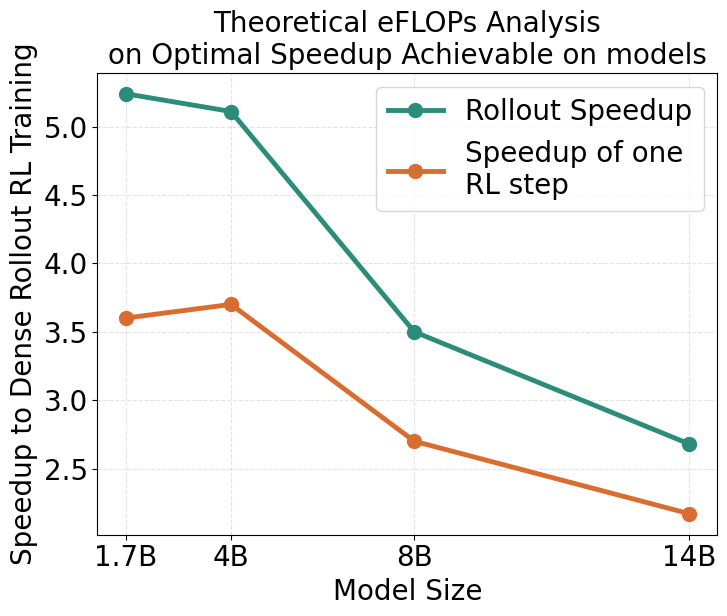
Sparse attention can make long-context RL rollouts much cheaper, but arbitrary sparsity creates actor-policy distribution mismatch and can collapse dense-policy training. This work shows that the tail of the sparse-dense token distribution is the right stability signal, then uses dynamic sparsity scheduling to keep that tail mismatch controlled through generation.
Aggressive sparse rollout is fast but can shorten responses during training and destabilize RL.
Most tokens remain nearly dense-aligned, so average acceptance hides the harmful tail behavior.
A tail acceptance threshold around 0.86 works across model sizes and unlocks strong rollout speedups.
The paper studies the lowest sparse-rollout cost that still preserves stable dense-policy RL. Instead of relying on average distribution mismatch, it measures lower-tail per-token acceptance against dense attention.

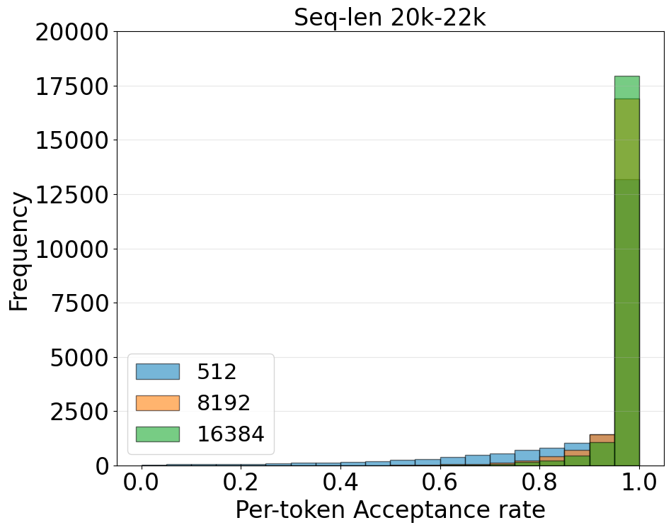
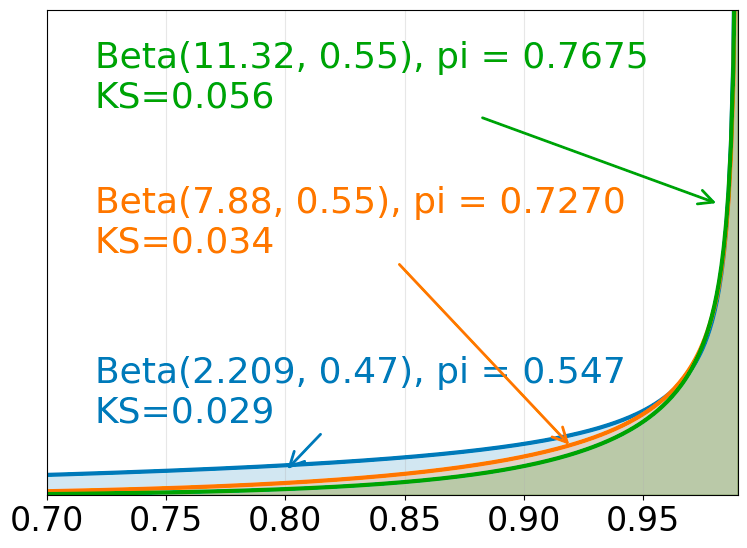
Dynamic sparsity scheduling increases the KV budget as generation proceeds, keeping sparse-dense distribution mismatch approximately constant across long rollouts. The target is selected with the 5-percentile acceptance statistic, which focuses on the unstable tail instead of the easy tokens that already match dense attention.
After fixing a stability target, the paper uses a rollout cost model to choose the cheapest sparse attention schedule that satisfies the threshold.
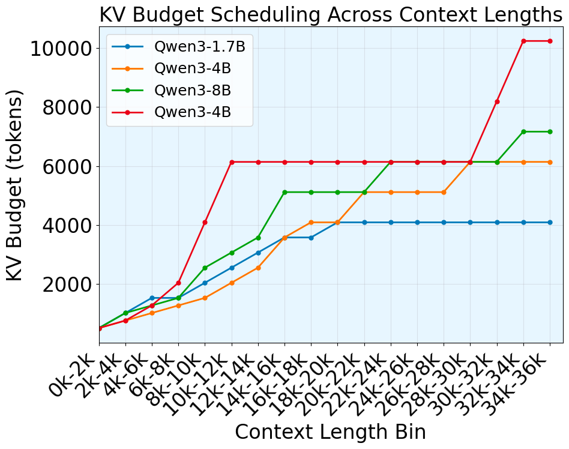
The control study estimates schedules for Qwen3-1.7B, 4B, and 8B at several mismatch targets, then trains under each target to identify which settings remain stable and match dense rollout performance.


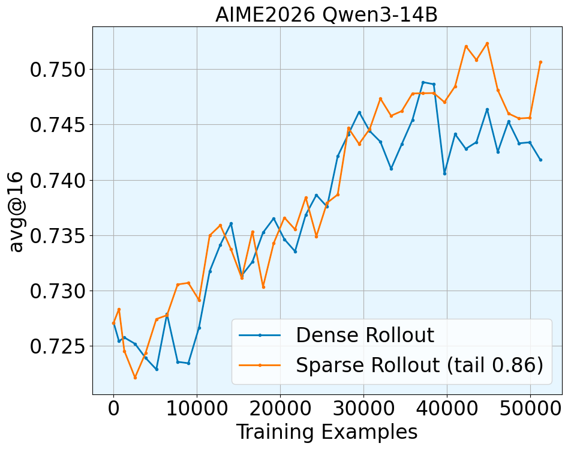
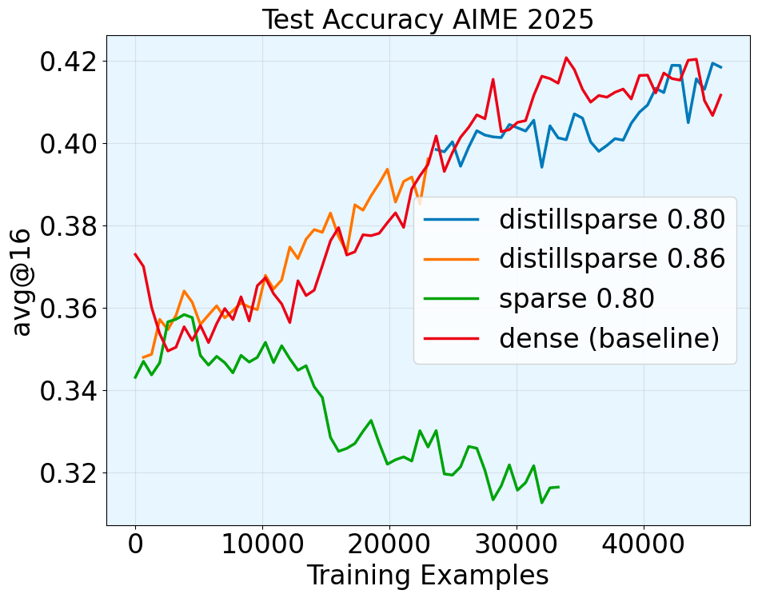
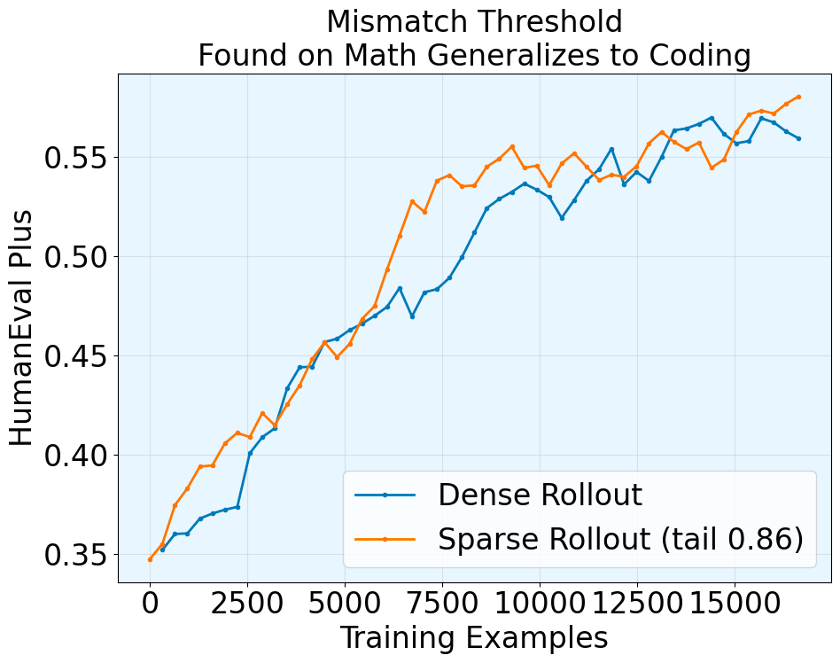
The rollout cost model separates dense and sparse decoding into computation and KV-cache memory traffic. Sparse attention replaces quadratic rollout memory growth with budgeted O(KLout) growth, so the advantage becomes larger in long-context reasoning regimes.
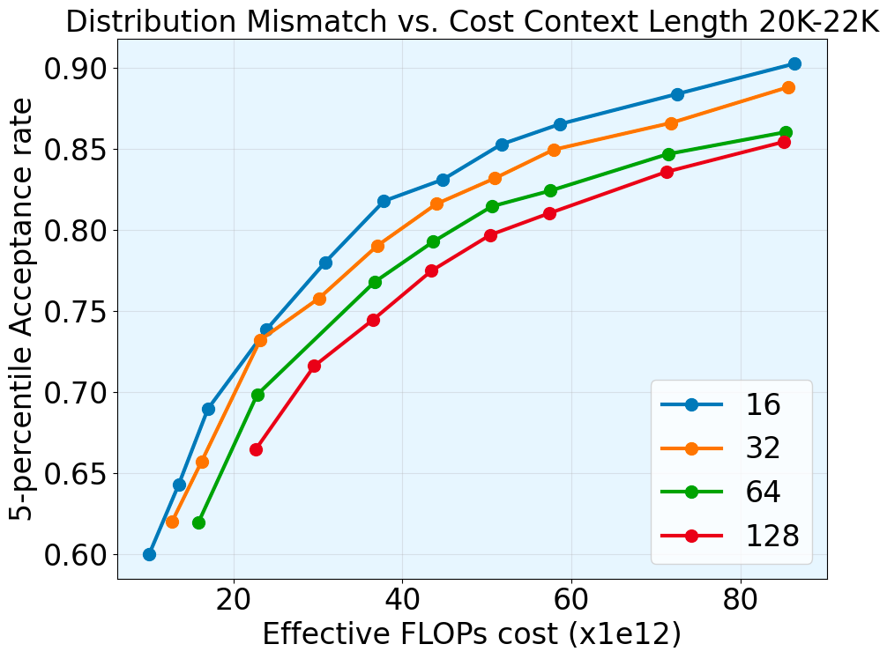
The site uses the PDF figures above and keeps selected page screenshots below for visual reference.
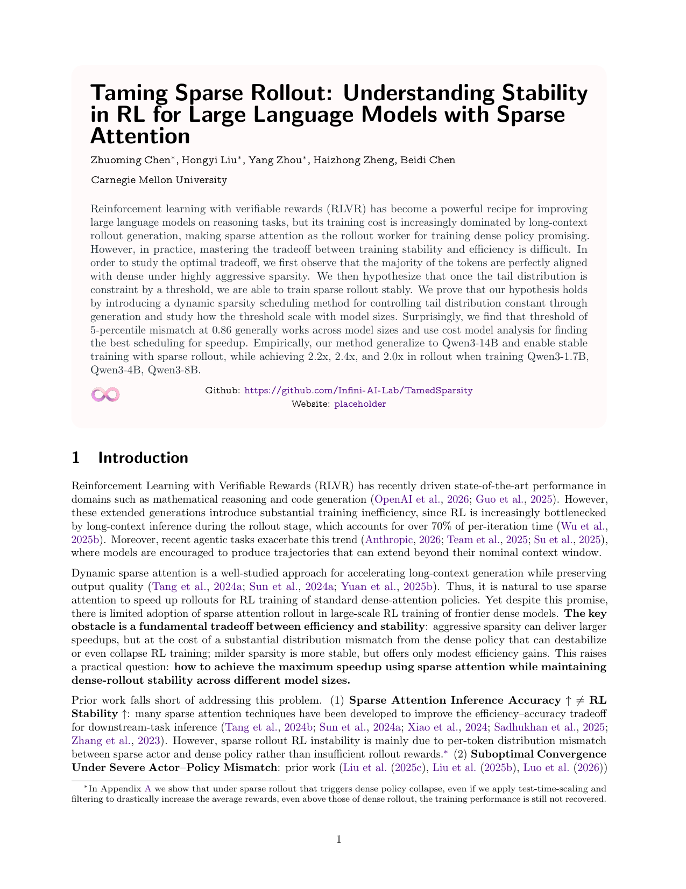
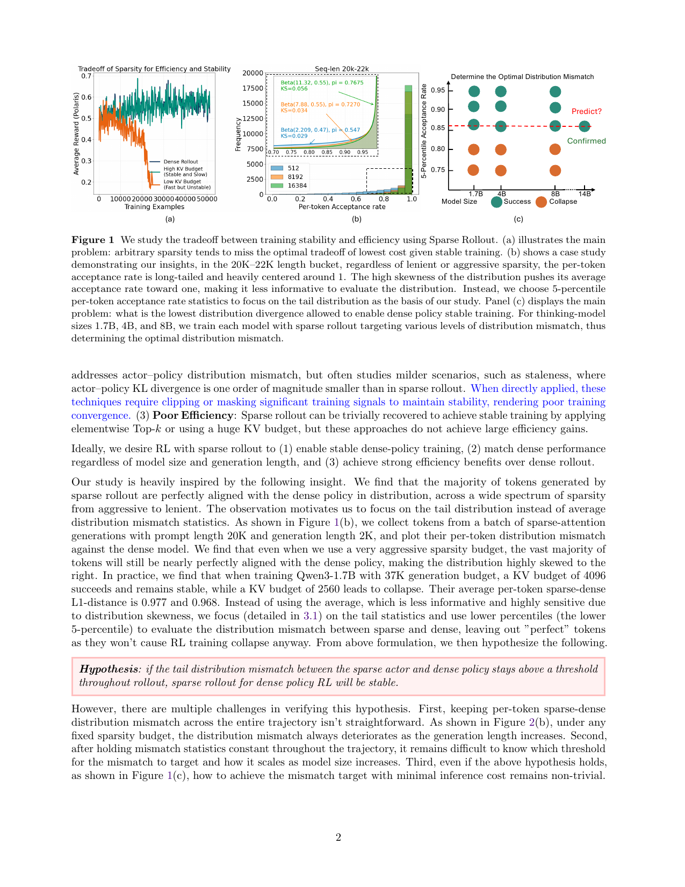
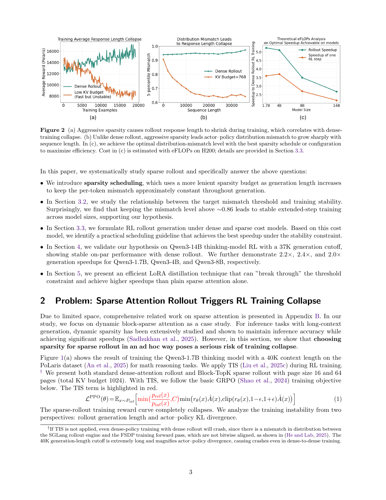
Placeholder citation. Replace this with the final LaTeX/BibTeX entry when the paper metadata is finalized.
@misc{chen2026tamingsparserollout,
title = {Taming Sparse Rollout: Understanding Stability in RL for Large Language Models with Sparse Attention},
author = {Chen, Zhuoming and Liu, Hongyi and Zhou, Yang and Zheng, Haizhong and Chen, Beidi},
year = {2026},
note = {arXiv placeholder}
}